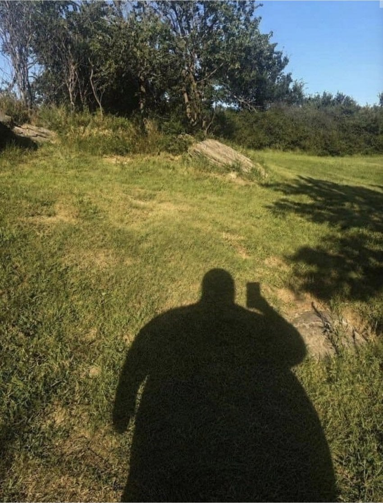

나랑 각각 소주 5병 마신 애도 만취했으면서 실수는 커녕 화장실가서 세수하고 무릎 부여잡고 반쯤 기어나와서라도 택시 타고 멀쩡히 집 도착해서 카톡까지 잘만 하던데???
내가 그거 본 뒤론
술 먹고 운전대 잡고
술 먹고 떡 치고
술 먹고 바람피우고
이런거 실수라고 하는거 안 믿음

나랑 각각 소주 5병 마신 애도 만취했으면서 실수는 커녕 화장실가서 세수하고 무릎 부여잡고 반쯤 기어나와서라도 택시 타고 멀쩡히 집 도착해서 카톡까지 잘만 하던데???
내가 그거 본 뒤론
술 먹고 운전대 잡고
술 먹고 떡 치고
술 먹고 바람피우고
이런거 실수라고 하는거 안 믿음
신동엽이랑 같이 먹는게 신동엽이 표정으로 욕하던데 쯔양은 신나서 잔에 술 따라주고
자작추
베이맥스?
술먹고 지랄하는 새끼들이 제일 문제인데
네 논리도 지랄맞긴 매한가지네;;
퇴근하고 걍 개소리 좀 씨부리고 싶엇음
부머
그림자 다라이머고
오 터스크 엑트4인가
혹시 종족이 부머니?
고급 찻집 주전자 처럼 생겼네
아니... 와...
주전자임?
실수에요잉~
그건 음 아니 이정도 사진이면 특정가능할꺼같긴한디
그림자 손 끝 뭉툭한거봐
그림자 원피스에서 본거 같아
취했다는 이유로 아무렇게나 행동하고싶은거겠지
당연히 실수 아니지ㅋㅋ 나랑은 실수 씨발 존나 안함. 내가 '실수'할것같으면 칼같이 알아채고 차단함
최소한의 커트라인
지하철에서 밀려본적 아예 없을거같다
아직 덜 먹은거에요잉
술 먹으면 이성으로 붙잡던 것들이 고삐가 풀려서 튀어나온단 소리지. 취중진담 같은 것도 그런거고. 원랜 못할 소리 취중에 고삐풀리니까 하는거잖아.
물론 무슨 술처먹고 실수한거니까 용서해달라느니 이런건 개 병신 같은 쌉소리고 혼나야하는 소리임.
근데 주변도르로 내 친구가 소주 5병 먹고도 기어서라도 집에 멀쩡히 들어갔으니 나머지 새끼들은 실수 아니란 소린...뭔 말 하고 싶은진 알겠는데...이게 말이 되는 예이거나 근거는 아니잖아?
예전 직장 동기는 꽤 친했어서 같이 어울려 놀았는데 암만 개꽐라가되도 대리는 무조건 부르고 칼같이 집에 기어가던 인간이었다. 근데 어느날 안보여서 뭐지 했는데 탄원서 써달라고 연락왔더라. 음주에 사고후미조치에 나중에 들어보니 경찰관 상대로 깽판도쳤더라.
뭔 소린지 알겠음? 님 친구가 지금 당장 소주 5병인지 50병인지 마시고 개가되어서도 집에 사고없이 갔으니 술마시고 실수란것은 업단 소리는....뭘 까고 싶은지는 알겠는데 전혀 상관없단 소리임.
그나저나 설마 사진은 본인 아니지? 본인이면 이런 사람들을 위해서는 진짜 위고비든 마운자로든 뭐든 건보적용시켜서 무조건 풀어라 제발
원래 기저심리에 그런 마음 그득히 깔려서 애초에 그럴 새끼들이 술이라는 빌미를 빌려서 긴장 풀고 그러고 싶은거
진짜 니그림자임?
이거 여자가 글쓴이한테는 술 암만먹어도 정신 똑바로차리고 실수절대 안하더라 -> 돼지라서
이런느낌으로 웃으라고 적은 글아닌가?
다들 왤케진지해 ㅋㅋ 댓글보고 좀 놀랐네 ㅋㅋ
이번 주 토요일에 실수하러 간다.
술먹고 실수 = 모텔까지 걸어가서 결제하고 방까지 엘베타고 올라가서 카드키 꽂고 불키고 옷 벗고 씻고(생략가능) 애무하고 삽입후 사정
저기가 원피스냐
쯔양이 술도 많이먹을까?